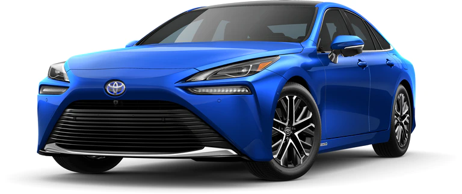
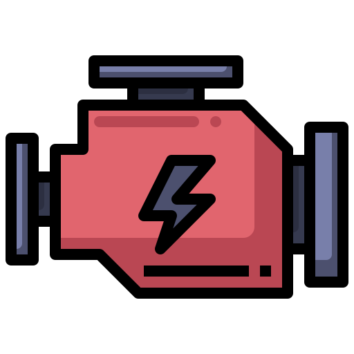
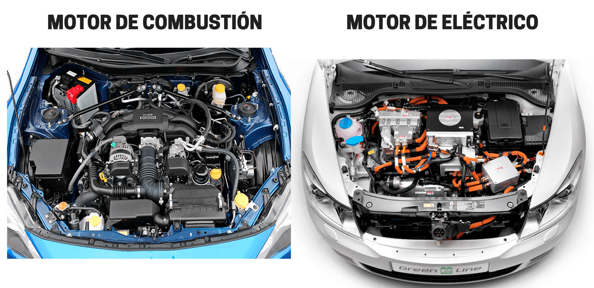

Los automóviles fueron un invento revolucionario y hasta el día de hoy, los avances en la ciencia han permitido el desarrollo de nuevas tecnologías, en este blog hablaremos de uno de los avances más grandes en la historia automotriz, los motores híbridos y eléctricos así como
una comparación entre estos, enfrentándose a los motores de gasolina sabremos sus características, puntos positivos y negativos de cada uno y lo más importante, el futuro de los combustibles y de los autos en general. ¿Será que los motores a gasolina puedan permanecer por
mucho tiempo más? ¿Otras tecnologías sustituirán a las anteriormente mencionadas? ¿Motores mediante combustión de hidrógeno? Descubrámoslo.
Desarrollo
Todos sabemos cuál es el uso normal de un automóvil, este es llevarnos de un punto a otro, para esto se requiere combustible y el más común es la gasolina, o al menos así es en la fecha que se está escribiendo este blog (finales de 2021). Sin embargo como mencioné
anteriormente, la industria automotriz ha llegado a una evolución en la cual la gasolina no es el único combustible utilizado en automóviles, esto sin contar al Diesel, ya que al menos en México no es tan utilizado en automóviles urbanos o de uso normal. Regresando a lo
anteriormente dicho, actualmente los automóviles híbridos e incluso eléctricos se están volviendo más comunes y fáciles de ver, esto se debe a sus beneficios respecto a las emisiones de CO2 y ahorrar algo de dinero en gasolina, así como beneficios fiscales y una vida útil más larga.
Ahora hablemos de los motores que nos trajeron a este blog, motores a gasolina, híbridos y eléctricos. ¿Qué diferencias tienen? ¿Cuál es mejor y por qué? ¿Pagar tanto por un auto eléctrico o híbrido? ¿Un automóvil híbrido no es lo mismo que uno eléctrico? Esas son preguntas
comunes y que en este blog trataremos de responder. Para esto lo primero que debemos tener en cuenta qué son cada uno de estos motores y el cómo es que funciona cada uno así como sus partes y características para así poder definir un ganador, o al menos para poderlos comparar
cara a cara de acuerdo con la información proporcionada.
Motivación
Elegí este tema porque estamos en una situación bastante compleja que es el calentamiento global y la contaminación. Esto no solo se debe a la industria y otros factores que las personas piensan, sino a todas las personas que utilizan el automóvil como medio principal de
transporte, y no estoy diciendo que esté mal simplemente estoy diciendo que la mayoría de automóviles al menos en México cuentan con un motor a base de gasolina, esto podrá sonar un poco ridículo, pero en esta época cada cosa por lo más mínima que sea puede afectar a muchos
en este caso, al mundo, por eso a lo que me quiero enfocar es tratar de orientar a las personas para que visualicen los beneficios de un automóvil eléctrico o híbrido, y esto no es sencillo, esto de debe a que somos ignorantes, y no nos preocupamos por buscar más información
acerca de algo.
¿Gasolina o electricidad?
Autos híbridos más vendidos en México (2020)
24/11/21
No vamos a tomar en cuenta a los autos eléctricos porque no se han distribuído muy bien por todo el país, tampoco a los de gasolina porque son más comunes y conocidos.
Nissan X-Trail Hybrid
Ford Escape hibrida
Toyota Corolla Hybrid
Kia Niro
Mercedes-Benz GLE
Toyota RAV4 Hybrid
Jeep Wrangler Mild-hybrid
RAM 1500 Mild-hybrid
Toyota Prius C
Toyota Prius
2022 Toyota Prius Nightshade Edition.
Sitios web donde puedes investigar acerca de automóviles:
Carnovo. (1 de agosto de 2019). ¿Qué coche me compro? ¿Diésel, gasolina, híbrido, eléctrico, GLP o GNC? [Video]. YouTube.
El funcionamiento de cada motor es distinto, pero todos tienen el mismo propósito, llevarnos de punto A a punto B, hay personas que prefieren lo tradicional ya sea gasolina o Diesel, especialmente gasolina, así como hay gente que ha ido modernizando y adaptándose a lo actual y
ha optado por un automóvil híbrido o eléctrico, en caso de México, más híbridos, esto se debe a que aún no contamos con la estructura suficiente en México para abastecer a una sociedad con autos eléctricos o enchufables, y esto es de lo que vamos a hablar, de los principales combustibles
en la industria actualmente, pero que en un futuro no muy lejano podrían cambiar.
Este video apoya bastante a la información y contenido de este tema, aunque algunas cosas son distintas, ya que la persona que narra el video es de Europa, sin embargo la información es bastante breve y concreta, hablando de ventajas y desventajas de cada uno de los combustibles
más comunes (gasolina, Diesel, híbridos, eléctricos enchufables, etc). Considero que el narrador de este video y el canal Carnovo son una fuente de información confiable y segura. De los videos que pude ver este era el más resumido y dinámico, había videos de más de 20 minutos pero
considero que es mejor un video breve y conciso, es más atractivo.
Investigación
10/01/22
Autos híbridos
Un auto híbrido es todo aquel que utiliza dos motores de distinta combustión para mover el automóvil. La forma tradicional de un auto híbrido es la que utiliza un motor de combustión basado en gasolina o diesel (pocos casos) complementado con un motor eléctrico, lo cierto es que en la actualidad tenemos diferentes tipos de híbridos en el mercado, por ejemplo los enchufables, los no enchufables, y los llamados Mild Hybrid, existen más pero en esta explicación hablaremos específicamente de estos más adelante, y la clave en todos estos es la batería generalmente de ion de litio que es donde se almacena la energía.
Empecemos con el híbrido enchufable o PHEV (Plug-in Hybrid Electric Vehicle) este tipo de auto incluye un motor de combustión interna a base de gasolina que funciona junto a un motor eléctrico, ambos motores pueden mover el auto independientemente, y el motor eléctrico totalmente cargado tiene una autonomía de aproximadamente 50 kilómetros, así que sirve más que nada para utilizarlo en la ciudad más que en carretera. La batería se puede recargar mediante la combustión del vehículo o para lo que está diseñado, mediante la red eléctrica, enchufado. El conductor puede elegir entre el modo de conducción, ya sea motor eléctrico, a gasolina o ambos.
Ahora es el turno de el híbrido no enchufable, o por sus siglas HEV (Hybrid Electric Vehicle), este tipo de auto es similar al enchufable (cuenta con dos motores, eléctrico y a gasolina), sin embargo no cuenta con la característica de poder recargarse mediante la corriente eléctrica, en cambio utiliza un sistema de regeneración de energía cinética, esta se acciona con el auto frenando e incluso desacelerando. Esta modalidad es como un híbrido tradicional debería ser. Igual que en el enchufable, el rendimiento y autonomía del motor eléctrico no ofrece tanto como para un viaje en carretera, simplemente recorridos urbanos y relativamente breves.
Para finalizar con los híbridos, tenemos a los Mild Hybrid, también conocidos como híbridos suaves. Cada vez las tecnologías y la electricidad y automatización de sistemas en los automóviles es más demandante y requiere de bastante más energía, normalmente se utilizan 12 voltios para los sistemas eléctricos de un auto, pero por el requerimiento de más energía se han creado sistemas de 48 voltios. Este sistema hace que cuando no lo sea necesario, haga que el motor deje de generar combustión para reducir las emisiones y tratar de tener la mayor autonomía posible, esto se debe a que el motor empieza a almacenar la energía en el momento necesario. El alto voltaje de estos autos permiten sustituir algunas partes como el alternador.
Autos eléctricos
Un coche eléctrico tiene como característica principal que su sistema de propulsión está formado por uno o más motores eléctricos que se alimentan de la energía almacenada en una batería recargable. Dicha batería se recarga de energía bien enchufando el vehículo a una toma de corriente eléctrica o bien gracias a un sistema de auto regeneración, sobre todo durante las frenadas. Esta modalidad está compuesta por uno o varios motores, a su vez, el motor está compuesto por tres cosas:
El cargador, este es encargado de recibir la electricidad para almacenar energía, el inversor que se encarga de transformar la corriente continua a trifásica para que esta llegue a distintos lugares del auto y por último, el controlador que es el encargado de gestionar la corriente eléctrica de acuerdo a las necesidades del auto este componente hace que la gestión sea eficaz y segura. La batería por otra parte son clave para el funcionamiento del auto, son encargadas de almacenar toda la energía recibida del enchufe, un dato curioso es que es el componente más costoso. Y para finalizar tenemos a los transformadores, estos se encargan de transformar la corriente alterna que llega desde la red eléctrica en corriente continua que es la que se almacena en las baterías.
¿Qué nos espera?
La venta de automóviles eléctricos, híbridos e híbridos enchufables en el año 2020 ha ido aumentando respecto a años anteriores, sin embargo es un aumento lento, ¿pero a qué se debe? La Asociación Mexicana de la Industria Automotriz (AMIA) reportó que en 2020 se vendieron en México 24,405 vehículos híbridos, enchufables y eléctricos, esta cifra representa tan solo el , se estima que conforme pase el tiempo y la infraestructura del país respecto a equipo y presupuesto para apoyar al movimiento eléctrico mejore, las cifras de ventas aumentarán significativamente, provocando que las personas emigren de autos a gasolina a híbridos o eléctricos.
Sin embargo, México al ser un país no tan desarrollado como otros los cuales se han podido adaptar más rápido respecto a autos principalmente eléctricos, , esto se debe a lo anteriormente mencionado y a que las economías globales son las encargadas de dar pauta a este proceso. Con estos datos podemos deducir que en un futuro relativamente lejano la industria automotriz dará una giro y considerando el avance de las tecnologías probablemente se llegue al cambio y a nuevas posibles tecnologías para nuevas modalidades de combustión en los autos.
Con otras modalidades, nos referimos a posible implementación e incremento de tecnologías como combustión mediante hidrógeno. Esta se forma en una llama de gas de hidrógeno puro, quemándose en el aire, el hidrógeno (H2) reacciona con el oxígeno (O2) para formar agua (H2O) y liberar calor, todo esto logrado por una pila de combustible instalada en el automóvil. En caso de Toyota esta tecnología la están implementando en el Toyota Mirai, que lo catalogan como el auto del futuro, esto se debe a todas las características con las que este cuenta, desde la tecnología tanto en interior como en exterior, pasando por la buena seguridad y el buen confort que ofrece hasta llegar a su punto fuerte, la combustión mediante hidrógeno. Creo que llegamos muy lejos, este auto todavía se tardará un rato en llegar a México.
Respondiendo a la pregunta del este subtítulo, nos espera en un futuro relativamente lejano une revolución automotriz y muchos desarrollos y evoluciones respecto a tecnología, cada vez las marcas y las personas nos sorprenden con nuevas invenciones que hacen que nuestra manera de pensar cambie rotundamente, en este caso tenemos el problema de la Tierra, si no cuidamos nuestro hogar este se va a terminar mucho antes de lo que esperábamos, como ya he mencionado, realizando cambios mínimos puede hacer la diferencia comparado a no ser nada, esto es más que una época de cambio, es un cambio de época.

2022 Toyota Mirai Limited, combustión a base de hidrógeno.
 ¿Combustión eléctrica?
08/02/22
¿Eso existe?
Si bien la palabra "combustión" se refiere a la reacción química rápida del oxígeno del aire u oxígeno directo, con los distintos elementos que constituyen el combustible, ya sea carbono o hidrógeno. Todo este proceso realizado dentro un motor de combustión interna junto con diferentes procesos y piezas, entonces, ¿cómo un automóvil que no cuenta con un motor que funcione con gasolina o tan siquiera diesel va a realizar el proceso de combustión? La explicación es tan simple y absurda que tal vez como lector te hayas planteado alguna respuesta similar, o tal vez piensas que es algo sumamente difícil de explicar, pero para esto está la siguiente explicación.
Simplemente es una manera de decirle al proceso para que un automóvil se mueva (por lo menos en este blog), esto se debe a que en un motor eléctrico, prácticamente no podría haber combustión en un motor que ni siquiera cuenta con las partes necesarias para realizar este proceso. Más que nada este término equívoco se utiliza para facilitar el entendimiento de los temas, aunque es importante realizar la aclaración por si alguna persona está confundida en este momento, el término correcto para mencionar a un motor eléctrico sería eso mismo, motor eléctrico, no motor a combustión eléctrica. Sin embargo se puede confundir con el motor eléctrico de alguna parte o alguna otra cosa.
Un motor de combustión interna, funciona así: a partir de una mezcla entre aire y combustible, una chispa causa una explosión que acciona un pistón. En el motor eléctrico no se produce ninguna quema ni explosión. Funciona con un conjunto de bobinas y trabaja con inversión de campos magnéticos. Según esta definición, los motores eléctricos no emiten una chispa, por eso mismo no contaminan al medio ambiente. sin embargo la explotación de los recursos que se utilizan para la creación de las tecnologías eléctricas es un tema bastante polémico, que trataremos más adelante, a fin de cuentas es nuestro hogar de donde se sacan todos los recursos.

Motor de combustión interna vs motor eléctrico
 ¿Cuál me conviene?
¿Cuál me conviene?